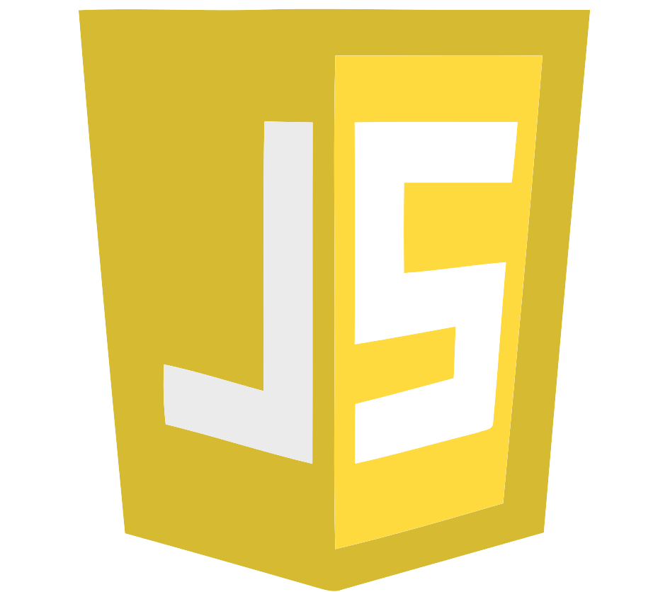

TECNOLOGIAS
Com pouco tempo em contato com essas ferramentas, ainda não domino as principais que o mercado exige.
Porém, ainda sim tenho um breve conhecimento e um domínio parcial nas seguintes tecnolgias:


- 


Me chamo Kauê Tadeu, tenho 21 anos e moro na zona sul de São Paulo.
Atualmente estou cursando o 3º semestre do curso de análise e desenvolvimento de sistemas.
Sem experiência comprovada com registro em carteira, busco uma recolocação no mercado de trabalho, preferencilamnte a primeira na área de tecnologia.
Estou aprendendo um pouco á cada dia sobre desenvolvimento com linguagens de programação.
Com pouco tempo em contato com essas ferramentas, ainda não domino as principais que o mercado exige.
Porém, ainda sim tenho um breve conhecimento e um domínio parcial nas seguintes tecnolgias:
Tenho experiências em rotinas administrativas, adquiridas em 3 organizações diferentes.
A primeira delas em 2019, quando eu tinha 16 anos. Trabalhei como jovem aprendiz em recursos humanos, na empresa EcoUrbis Ambiental S/A.
A segunda experiência profissional surgiu em uma oportunidade para trabalho na empresa XBZBRINDES. Onde tive o meu primeiro emprego CLT. Também no departamento de recursos humanos.
Na minha terceira e última experiência profissional, tive o desafio de ser responsável pela organização financeira da empresa Mordiditas, fazendo parte da equipe de contas a pagar e receber. 3 meses neste cargo, assumi uma nova ocupação de gerente de contas.
Rotina administrativa, contas a pagar, contas a receber, planejmaneto financeiro, organização, comunicação, trabalho em equipe, resolução de problemas, atenção aos detalhes, liderança, ética profissional
O meu primeiro e único projeto com desenvolvimento, foi um sistema de gerenciamento de museu. Desenvolvido em linguagem C, fiz este projeto em um trabalho da faculdade no segundo semestre.
Foi um desafio enorme para mim encarar um trabalho com uma proposta inédita em minha vida, pois até o momento nunca havia desenvolvido algo parecido. Este projeto tinha as funcionalidade de cadastrar obras e temas, cadastro de clientes, bilheteria com vendas diárias limitadas, pesquisa de satisfação e indicação de obras conforme respostas da pesquisa.
Neste projeto, tive contato com estrturas de dados, funções como: if, else, while, switch, case, void, ponteiros e arrays. Desenvolvimento da lógica de programção e soluções para um bom desenvolvimento.


PORTIFÓLIO @ KAUÊ TADEU